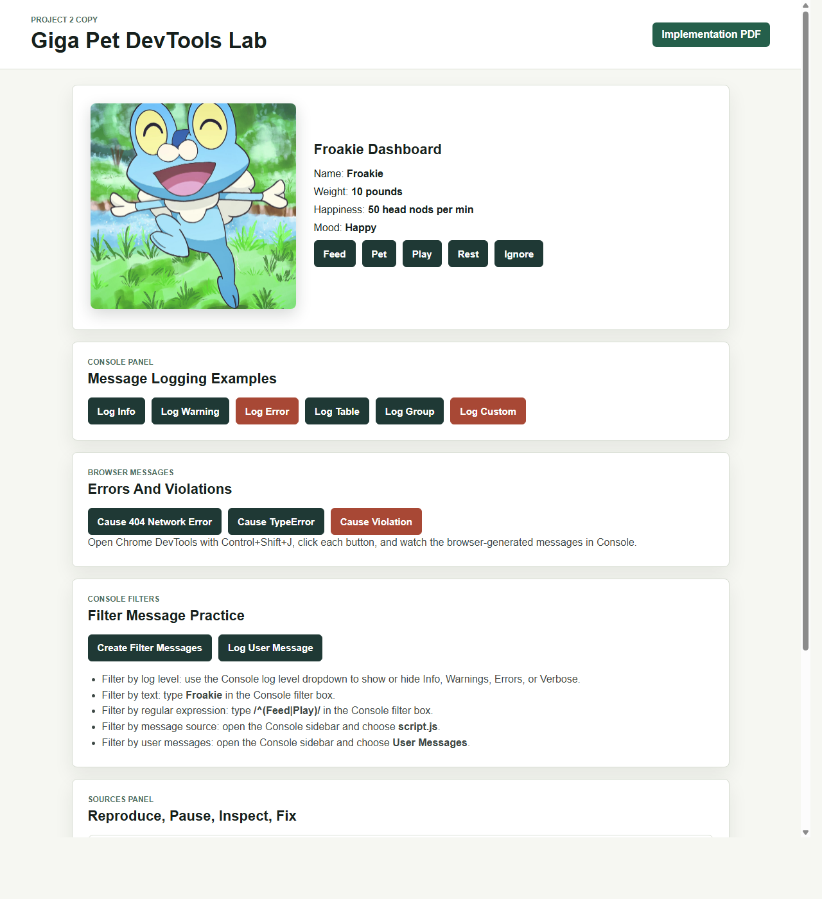
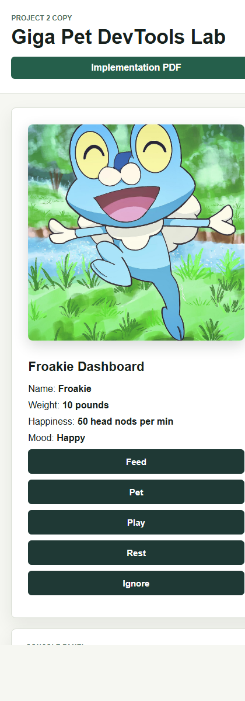

I reviewed the Chrome DevTools Console logging tutorial and JavaScript debugging tutorial, then added practical examples to a copied Project 2 folder named project2-devtools-copy. The original Giga Pet game remains present, and the new lab sections let a user trigger the same Console and Sources workflows from inside the project.
The Message Logging Examples section adds buttons for console.log(), console.warn(), console.error(), console.table(), console.group(), and a custom styled console.log() message. The warning example also calls console.trace() so the stack trace can be expanded in DevTools.

The Errors And Violations section includes a missing fetch request for a 404 network error, an intentional TypeError from writing to a missing DOM node, and a long click handler that causes a browser violation message. The Filter Message Practice section logs messages with different levels and searchable text so the Console can be filtered by log level, text, regular expression, message source, and user messages.
The Sources Panel section reproduces the debugging tutorial's string-concatenation bug with pet treat inputs. With values 5 and 1, the Reproduce Bug button shows 5 + 1 = 51. The function calculatePetSnackTotal() is intentionally breakpoint-friendly: a line-of-code breakpoint can be placed where sum is assigned, then the Scope pane, Watch expression typeof sum, and Console drawer expression Number(treats) + Number(bonusTreats) can be used to inspect and test the fix. The Apply Fix button uses numeric conversion and returns 6.

index.html: added DevTools lab controls and report link.style.css: added responsive layout and lab styling.script.js: added all Console, browser-message, filtering, and Sources debugging examples.assets/devtools-implementation-report.pdf: this PDF report.